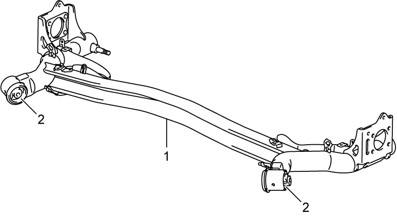

2C
| Rear Axle Check |
•Check rear axle (1) for deformation and damage.
•Check rear axle bushings (2) for crack, deformation and damage.
If check result is not OK, replace rear axle bushing(s) with new one(s).
•Check rear axle bushings (2) for crack, deformation and damage.
If check result is not OK, replace rear axle bushing(s) with new one(s).

 "Expand image")